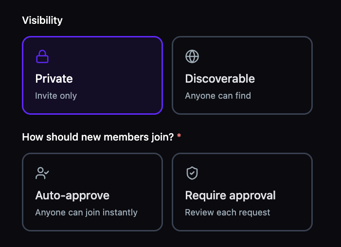
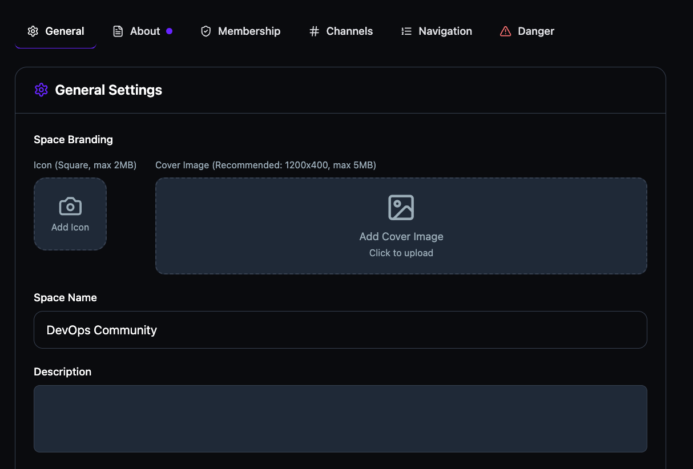
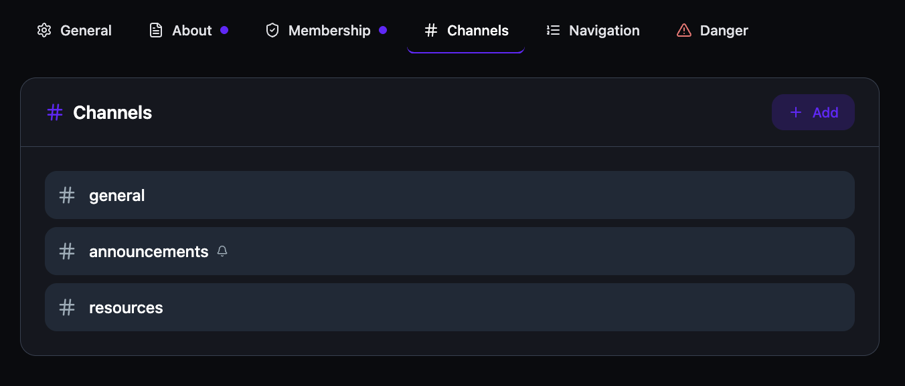
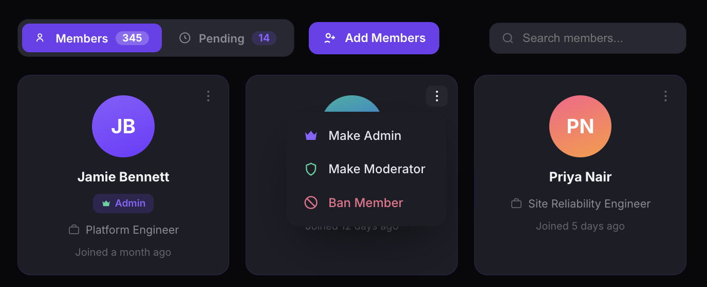
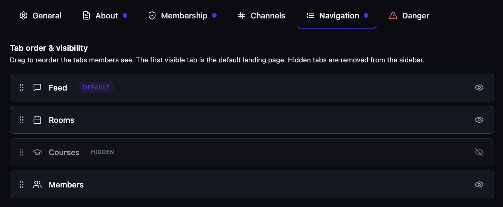
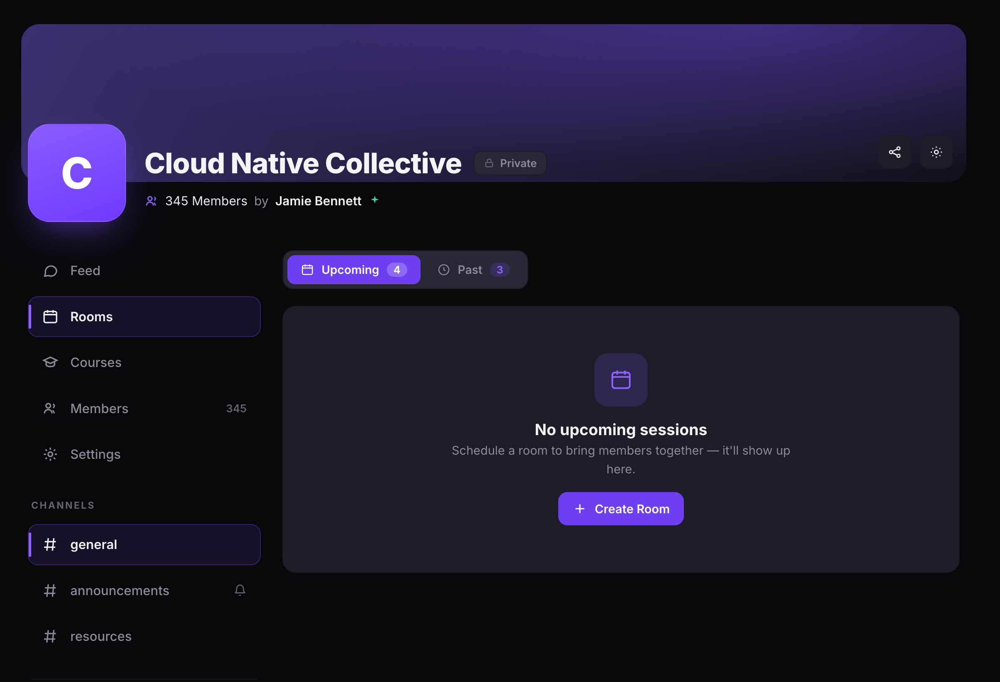

Launch a community in under a minute.
Name your community, write a description, set visibility and membership rules, and you're live. Choose between Private (invite only) or Discoverable (anyone can find), then decide how new members join — auto-approve or require approval. Every community comes with default channels, a member directory, and a customizable sidebar from day one.
- Private or Discoverable — invite-only communities or open-to-find with request-to-join.
- Auto-approve or require approval — let anyone join instantly or review each request manually.
- Unlimited communities — create as many as your program needs, organized by topic, cohort, or sector.

Your brand, not ours.
The General Settings tab is where your community's identity lives. Upload a square icon and a wide cover image, edit the space name and description, and every touchpoint updates instantly. Settings are organized across six tabs — General, About, Membership, Channels, Navigation, and Danger — so every aspect of your community is configurable from one place.
- Custom icon & cover — square icon (up to 2 MB) and a wide cover image (1200×400 recommended).
- Space name & description — set the identity visitors and members see first.
- Six settings tabs — General, About, Membership, Channels, Navigation, and Danger for full control.

Structure the conversation, don't scatter it.
Every community starts with three default channels — # general, # announcements, and # resources. Add custom channels for any topic, and lock channels to announcement-only so only admins can post official updates. Members see channels in the sidebar, organized under a dedicated Channels section.
- Unlimited custom channels — add channels for projects, regions, cohorts, or any structure you need.
- Announcement-only mode — restrict posting to admins for official communications.
- Rename or remove — default channels can be edited or deleted to match your vocabulary.

Decide who gets in and how.
The Membership tab gives you three join modes: Auto-approve lets anyone in instantly, Criteria-based auto-approves applicants whose form answers meet your rules and rejects the rest, and Require approval puts you in control of every request. A form toggle at the bottom lets you collect responses before anyone joins.
- Three join modes — Auto-approve, Criteria-based, or Require approval.
- Criteria-based gating — define rules that auto-approve or auto-reject based on form answers.
- Form toggle — require attendees to fill a form before they can join, regardless of join mode.

Collect the data you need before they join.
Toggle the form on and a builder appears with a title field and a Quick Add From Suggestions list — Full Name, Email, Phone, Company, Job Title, LinkedIn, "What brings you here?", and "How did you hear about us?" Add any of them with one click, or write your own custom questions. Every response is reviewable from the Members tab.
- Quick-add suggestions — eight pre-built fields covering identity, company, and intent.
- Custom questions — add your own open-ended or structured questions beyond the suggestions.
- Reviewable responses — access all form submissions directly from the Members tab.

Manage your members without managing chaos.
The Members view shows total count, pending requests, and a search bar at the top. Each member appears as a card with their name, role badge, job title, and join date. Open the three-dot menu to promote to Admin or Moderator, or Ban anyone who violates your guidelines.
- Three roles — Admin (full control), Moderator (manage sessions, rooms, courses), and Member.
- Pending queue — see pending request count and approve or reject with one click.
- Add members — invite people who attended your previous sessions or events directly into the community.

Earn from your community, natively.
Check the Paid membership box and set a monthly price. Enable yearly billing and the platform auto-calculates the savings percentage for you. No Stripe plugins. No payment workarounds. Revenue collection is built in.
- Monthly pricing — set your price and start collecting immediately.
- Yearly billing — offer a discounted annual option with auto-calculated savings display.
- Toggle on or off — convert any free community to paid, or remove pricing, at any time.

Show only what your community needs.
The Navigation tab lets you control tab order and visibility. Drag tabs to reorder the sidebar, toggle the eye icon to hide tabs your community doesn't use, and the first visible tab becomes the default landing page. Hidden tabs are fully removed from the member sidebar.
- Drag-and-drop reorder — move Feed, Rooms, Courses, and Members into any order.
- Show or hide — toggle visibility per tab. Hidden tabs display a HIDDEN label and are removed from the sidebar.
- Default landing page — the first visible tab is marked DEFAULT and becomes the page members see first.

Run events inside the community, not outside it.
The community homepage has its own Rooms tab with Upcoming and Past counts. Click + Create Room to schedule a session directly inside the community — no separate event pages, no external links. Channels, members, settings, and rooms all live in the same sidebar, scoped to the community that created them.
- Community-scoped — rooms appear in the community's Rooms tab, visible only to members.
- Upcoming & Past — members see a count of scheduled and completed events at a glance.
- One-click creation — + Create Room launches the room builder without leaving the community.
